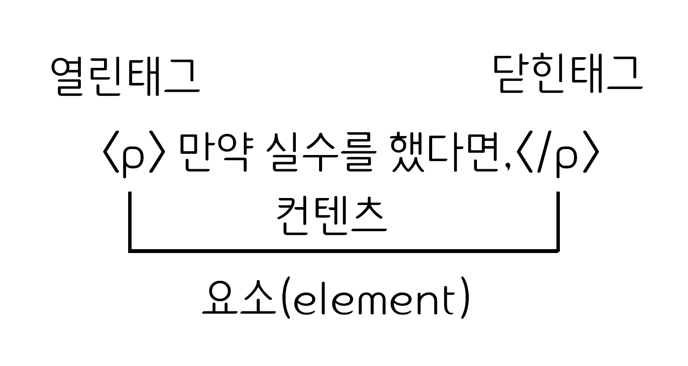

HTML
HTML(HyperText Markup Language)은 웹 문서를 표현하기 위한 하이퍼텍스트 마크업 언어입니다.
하이퍼텍스트란 문서에서 다른 문서로 이동하는 것을 말하며, 마크업이란 태그를 사용하여 콘텐츠의 의미를 부여하는 것을 말합니다.
HTML 은 Hyper Text Markup Language 약어로 HyperText(웹 페이지에서 다른 페이지로 이동할 수 있도록 하는 것) 기능을 가진 문서를 만드는 언어입니다. 다시 말해, 구조를 설계할 때 사용되는 언어로 hyper link 시스템을 가지고 있으며, 흔히 말하는 웹 페이지를 위한 마크업 언어라고 할 수 있습니다.
태그(Tag)
태그는 HTML에서 정보를 전달하는 방식을 의미합니다.
- 열린 태그(Opening tag) : 이것은 요소의 이름과 열고 닫는 꺽쇠 괄호로 구성됩니다. 요소가 시작부터 효과가 적용되기 시작합니다.
- 닫는 태그(Closing tag) : 이것은 요소의 이름 앞에 슬래시(/)가 있는것을 제외하면 열린 태그와 같습니다. 이것은 요소의 끝에 위치합니다. 닫는 태그를 적어주지 않는것은 흔한 초심자의 오류이며, 이것은 이상한 결과를 낳게됩니다.
- 내용(Content) : 요소의 내용이며, 이 경우 단순한 텍스트입니다.
- 요소(Element) : 여는태그, 닫는태그, 내용을 통틀어 요소라고 합니다.
속성(Attributes)
HTML 속성은 태그에 기본 기능 및 유형을 설정하고, 태그의 동작으로 제어하기 위한 용어입니다.

- 요소 이름 다음에 바로 오는 속성은 요소 이름과 속성 사이에 공백이 있어야 되고, 하나 이상의 속성들이 있는 경우엔 속성 사이에 공백이 있어야 합니다.
- 속성 이름 다음엔 등호(=)가 붙습니다.
- 속성 값은 열고 닫는 따옴표로 감싸야 합니다.
요소(Element)
요소는 HTML을 구성하는 가장 기본 기본 단위입니다.
태그의 시작태그와 끝나는 태그 사이의 범위를 요소라고 합니다.
주석
주석 표시는 프로그램에 영향을 미치지 않으며, 설명이나 메모를 목적으로 사용합니다.
<!-- 주석표시 -->;
블록요소 / 인라인요소
블록요소는 박스, 인라인 요소는 텍스트를 의미합니다.
- 블록 엘리먼트(Block Element)
- 독립된 박스 영역으로 한줄에 하나에 블록 요소만 표현 할 수 있습니다.
- 블록 요소에는 블록 요소와 인라인 요소를 포함 할 수 있습니다.
- <div>, <p>, <li>, <hr>, <address>
- 인라인 엘리먼트(Inline Element)
- 독립된 텍스트 영역으로 한줄에 여러개의 인라인 요소를 표현할 수 있습니다.
- 인라인 요소에는 블록요소가 포함 될 수 없지만, 인라인 요소는 포함 할 수 있습니다.
- <span>, <a>, <img>, <input>, <button>, <br>
DTD 선언
웹 문서를 제작하기 위해서는 웹 문서 유형을 설정해야 합니다.
DTD(Document Type Declaration)을 설정하지 않거나 잘못 설정하면 브라우저에 따라 화면이 다르게 나오거나 렌더링이 달라지기 떄문에 독타입을 설정해야 합니다.
<!-- HTML 4.01 Strict -->
<!DOCTYPE HTML PUBLIC "-//W3C//DTD HTML 4.01//EN" "http://www.w3.org/TR/html4/strict.dtd">
<!-- HTML 4.01 Transitional -->
<!DOCTYPE HTML PUBLIC "-//W3C//DTD HTML 4.01 Transitional//EN" "http://www.w3.org/TR/html4/loose.dtd">
<!-- HTML 4.01 Frameset -->
<!DOCTYPE HTML PUBLIC "-//W3C//DTD HTML 4.01 Frameset//EN" "http://www.w3.org/TR/html4/frameset.dtd">
<!-- XHTML 1.0 Strict -->
<!DOCTYPE html PUBLIC "-//W3C//DTD XHTML 1.0 Strict//EN" "http://www.w3.org/TR/xhtml1/DTD/xhtml1-strict.dtd">
<!-- XHTML 1.0 Transitional -->
<!DOCTYPE html PUBLIC "-//W3C//DTD XHTML 1.0 Transitional//EN" "http://www.w3.org/TR/xhtml1/DTD/xhtml1-transitional.dtd">
<!-- XHTML 1.0 Frameset -->
<!DOCTYPE html PUBLIC "-//W3C//DTD XHTML 1.0 Frameset//EN" "http://www.w3.org/TR/xhtml1/DTD/xhtml1-frameset.dtd">
<!-- XHTML 1.1 -->
<!DOCTYPE html PUBLIC "-//W3C//DTD XHTML 1.1//EN" "http://www.w3.org/TR/xhtml11/DTD/xhtml11.dtd">
<!-- html5 -->
<!DOCTYPE html>
언어 속성 설정
콘텐츠의 언어를 인식하고 언어 정보를 추출하는데 사용합니다.
미리 언어를 설정하면 효율성이 더 좋아집니다.
<!-- HTML5 -->
<html lang="ko">
<!-- HTML4 -->
<html xmlns="http://www.w3.org/1999/xhtml" xml:lang="en">
문서 구조
HTML는 구조는 html 요소 안에 html 요소 안에head와 body로 이루어져 있습니다.
- HTML 구조는 독타입 선언을 해주어야 하나의 웹 문서가 완성됩니다.
- HTML 문서는 상하 관계가 존재하는 계층적인 구조로 되어있습니다. 상위에 있는 요소와 하위에 있는 요소는 부모 자식 관꼐로 표현하며, 이러한 구조는 DOM 구조라고 합니다.
- HEAD 요소에는 제목, 사이트 정보, 스크립트, 스타일시트, 메타 정보등을 제공합니다.
- BODY 요소에는 문서 본문에 해당하는 콘텐츠 영역입니다.
<!DOCTYPE html>
<html lang="ko">
<head>
</head>
<body>
</body>
</html>
시멘틱 태그
html5 버전에서는 시맨틱 태그(Semantic Tag) 즉, 의미론적인 태그를 지원합니다. 이것은 있으나 없으나 문서의 모습이나 형태가 변하지 않습니다. 하지만, 유지보수하거나 다른 사람이 이 코드를 봤을 때 한눈에 어디서부터 어디까지가 이 영역안에 있는 태그인지 확인할 수 있습니다. 여기서 영역안에 있는 태그의 이름이 시맨틱 태그의 역할입니다.
시멘틱 태그 종류
- <header> : 화면 상단에 위치하며 보통 로고, 로그인, 회원가입 등을 포함합니다.
- <nav> : 보통 <header> 영역의 아래쪽에 위치하며 메뉴를 표현할 수 있습니다.
- <section> : 하나의 주제를 그룹화할 때 사용합니다. (ex 뉴스 기사의 제목)
- <article> : 하나의 주제에 대해서 그 내용에 대해 설명할 떄 사용합니다. (ex 뉴스 기사, 블로그 글)
- <aside> : 흔히 사이드바라고 불리는 곳으로 보통 광고, 검색 기능, 카테고리 등을 표현합니다.
- <footer> : 화면 하단에 위치하며 보통 이메일, 저작권 표시 등을 표현합니다.
html5 새로나온 태그
html5 새로나온 태그입니다.
구조적인 표현을 위해 추가된 태그들
- <section>: 일반적인 문서나 앱의 섹션을 나타낸다. h1, h2, h3, h4, h5, h6등과 같은 태그와 함께 문서의 구조를 나타낼때 사용할 수 있다.
- <article>: 문서내의 하나의 독립적인 컨텐츠 부분을 나타낸다. 블로그 엔트리 또는 뉴스 기사 등에 사용
- <aside>: 나머지 문서와는 아주 조금, 거의 연관이 없는 컨텐츠 부분을 나타낸다.
- <hgroup>: <section>의 헤더를 나타낸다.
- <header>: 소개 또는 네비게이션 도구의 그룹을 나타낸다.
- <footer>: 섹션의 footer글 또는 작성자, 저작권 등의 정보를 나타낸다.
- <nav>: 문서의 네이게이션을 도와주는 부분을 나타낸다.
- <figure>: 컨텐츠와 연관된 미디어를 나타낸다.
- <figcaption>: 옵셔널한 캡션 태그
다른 새로운 태그들
- <video>: 비디오 미디어를 추가한다. 자체 UI를 제공한다.
- <audio>: 오디오 미디어를 추가한다. 자체 UI를 제공한다.
- <source>: <video>나 <audio>의 소스를 나타낸다.
- <track>: 비디오를 위한 텍스트 트랙 제공
- <embed>: 플러그인 컨텐츠를 위한 태그
- <canvas>: 동적인 비트맵 그래픽을 활용하는 캔버스 공간
- <mark>: 다른 컨텐츠와의 연관성을 문서 내부에 나타내기 위한 태그
- <time>: 날짜와 시간을 나타내는 태그
- <ruby>, <rt>, <rp>: Ruby 를 표시하는 태그
- <bdi>: 주위와 독립적으로 흐르는 텍스트를 나타내는 태그
- <wbr>: 라인을 바꿀 수 있는 위치를 나타내는 태그
- <command>: 사용자가 호출할 수 있는 커맨드를 나타내는 태그
- <details>: 추가 정보나 사용자가 획득할 수 있는 컨트롤을 나타내는 태그
- <datalist>: input의 list 속성과 함께 콤보박스를 만드는 태그
- <keygen>: key pair를 생성하는 컨트롤 태그
- <output>: 스크립트 등을 통해 계산된 결과를 나타내는 태그
- <input>: 새로운 type들이 추가
HTML5에서 없어진 요소
HTML5에서 없어진 요소들
- <audio> 태그는 음악이나 다른 오디오 스트림과 같은 소리를 들려준다.
src미디어 주소 제공autoplay미디어 자동 재생loop미디어 반복 재생controls사용자 에이전트가 제공하는 기본 컨트롤러를 사용
- <canvas> 태그는 스크립트를 제공하여 그래프, 게임 그래픽, 기타 비주얼 이미지를 그릴 수 있다.
widthcanvas의 너비 지정heightcanvas의 높이 지정- 좌표 공간에서의 크기를 조절하는 두가지 속성은 유효한 양의 정수값이어야 한다.
- canvas 요소에 동적인 작업을 하려면 스크립트 언어를 사용해야 한다.
- <command> 태그는 사용자가 실행할 수 있는 명령을 나타낸다.
type명령의 종류를 정의, radio, checkbox, command를 지정하며 기본값은 commandlabelcommand의 이름을 지정하며 값으로 빈 문자열을 쓸 수 없음title사용자에게 설명이나 힌트 제공iconcommand 요소에 보일 아이콘 지정disabled사용 불가능함을 나타냄checkedtype 속성이 checkbox나 radio일 때 checked 속성을 선언하면 선택된 상태로 나타남radiogrouptype 속성이 radio 일 때 토글된 커맨드의 이름을 지정할 수있는 속성
- <datalist> 태그는 input 요소에 대한 미리 정의된 옵션 집합을 나타낸다.
- input 요소에 "자동완성"기능을 제공하는데 사용된다. 사용자는 입력 데이터로 미리내용은 미리 정의된 옵션
- option 요소를 포함할 수 있다.
- input 요소에 묶여 있다.
- <details> 태그는 사용자가 보거나 숨길 수 있는 추가정보를 지정하고 열고 닫을 수 있는 대화형 도구를 만드는데 사용한다.
open세부 사항을 노출
- <embed> 태그는 HTML이 아닌 외부 애플리케이션이나 대화형 컨텐츠를 포함할 때 사용한다.
src포함하고자 하는 외부 자원의 주소 지정type인스턴스화 할 플러그인의 유효한 MIME 타입 지정width요소의 너비 정의height요소의 높이 정의
- <figcaption> 태그는 부모 요소인 figure 요소의 캡션이나 제목을 정의한다.
- <figure> 태그는 일러스트레이션, 도표, 사진, 코드 등과 자체 포함된 내용을 지정한다. 이 요소는 보통 문서의 흐름에서 단일 요소로 참조되어 제거되더라도 문서의 주된 흐름에 영향을 미치지 않는다.
- <hgroup> 태그는 섹션의 제목을 나타낸다. 부제목이나 태그영역 <h1> ~ <h6> 요소들을 그룹짓기 위해 사용한다.
- <keygen> 태그는 암호화를 위한 개인키와 공개키 쌍을 만들어낸다.
autofocus페이지를 로드할 때 요소가 자동으로 포커스를 받음challenge값과 함께 전달되는 문자열disabled값을 제출하지 않음form명시적으로 폼 소유자를 지정keytype키의 유형을 정의name폼 제출 시에 사용되는 폼 컨트롤의 이름을 나타냄- 폼 관련 요소에 속한다.
- 스크립트에서 form.elements와 fieldset.elements로 호출할 수 있다. (여기에서 form, fieldset은 해당 요소의 name 속성값)
- 레이블을 붙일 수 있다.
- 폼을 전송할 때 함께 전송된다.
- <mark> 태그는 문서 내에서 다른 문맥과의 관련성을 표시하기 위해 참조 목적으로 마킹, 혹은 하이라이팅 한 텍스트 집합을 나타낸다.
- 인용구의 특정한 부분으로 주의를 환기시키기 위해 mark 요소를 사용한다.
- "구문 강조"와는 다른 의미로 구문 강조에 쓰기엔 span 요소가 좀 더 적절하다.
- 원래는 강조되지 않았었던 텍스트를 인용문 일부에서 mark 요소로 하이라이트할 경우 일반적인 표현 관습대로 인용문 내의 mark 요소를 이태릭체로 표시할 수 있다.
- 텍스트에서 "중요성"(strong)을 나타내는 것과 "연관성"(mark)을 나타내는 것의 차이가 있다. 문장과 관련이 없으니 중요한 부분을 나타내고자 할때는 mark 요소보다는 strong 요소를 사용하는 것이 더 적합하다.
- <mark> 태그는 알려진 범위 내에서의 스칼라 측정 또는 분포 비율을 나타낸다.
value게이지에 표시하는 측정 값min범위의 최소 값max범위의 최대 값low'낮음' 범위의 값high'높음' 범위의 값optimum'최적' 범위의 값form명시적으로 폼 소유자 정의
- <output> 태그는 계산의 결과를 나타낸다.
for계산의 결과와 계산에 사용되었거나 계산에 영향을 미친 값을 나타내는 요소를 명시적으로 연결form폼 소유자와 요소를 명시적으로 연결name폼 제출시에 사용되는 폼 컨트롤의 이름
- <progress> 태그는 작업의 진행 상황을 나타낸다.
value진행된 작업의 값max최대 작업양form명시적으로 폼 소유자 정의
- <rp> 태그는 루비 주석을 지원하지 않는 사용자에게 루비 텍스트를 괄호로 둘러싸서 표현하기 위해 사용된다.
- <rt> 태그는 루비 텍스트의 루비 주석을 나타낸다.
- <ruby> 태그는 루비 주석을 정의한다. 루비 주석은 텍스트 주변(보통 위에)에 나타나는 텍스트로 주로 동아시아권 언어에서 발음이나 주석으로 사용된다.
- <source> 태그는 video 요소 및 audio 요소와 같은 미디어 요소에서 사용할 수 있는 대체 미디어 자원을 정의한다.
src미디어 자원 주소 정의type사용할 수 있는 타입의 자원인지 확인media사용할 수 있는 미디어 자원인지 확인
- <track> 태그는 video 요소 및 audio 요소와 같은 미디어 요소에 대한 텍스트 트랙을 지정한다. 이 요소는 자막파일이나 텍스트를 포함하는 다른 파일을 자정하는데 사용된다.
kind텍스트 트랙의 종류 정의src텍스트 트랙 데이터의 주소 정의srclang텍스트 트랙 데이터의 언어 정의label사용자가 읽을 수 있는 트랙 제목 정의default기본 트랙 정의
- <video> 태그는 비디오나 영화를 재생하는데 사용된다.
src미디어 자원의 주소를 제공poster비디오를 사용할 수 없을때 보여줄 이미지preloadnone, metadata, auto 키워드를 지정하여 미디어의 다운로드 상태 결정autoplay미디어를 자동 재생loop미디어를 반복 재생audio오디오 채널을 제어controls사용자 에이전트가 제공하는 기본 콘트롤러를 사용width미디어의 가로 크기를 정의height미디어의 세로 크기를 정의src속성이 있으면 track 요소를 자식 요소로 포함할 수 있다.src속성이 없으면 source 요소와 track 요소를 자식 요소로 포함할 수 있다.video요소, audio 요소와 같은 미디어 요소는 자식 요소로 포함할 수 없다.video요소를 지원하지 않는 오래된 웹 브라우저에서 구형 비디오 플러그인을 시도하거나 사용자가 비디오 컨텐츠에 접근할 수 있는 방법을 제시하는 텍스트를 보여줄 수 있도록 요소 내부에 컨텐츠를 제공할 수 있다.
웹 표준과 웹 접근성
웹 표준은 규격을 지켜야하고 접근성은 장애구분없이 모든사람이 정보를 공유할 수 있어야합니다.
- 웹 표준 : 웹 표준이란 월드 와이드의 측면을 서술하고 정의하는 공식 표준이나 다른 기술 규격을 가리키는 일반적인 용어입니다.
- 웹 접근성 : 웹 접근성이란 월드 와이드 웹 (World Wide Web)에서 '장애에 구애 없이 모든 사람들이 손쉽게 정보를 공유할 수 있는 공간'이라고 정의하였으며, 웹 콘텐츠를 제작할 때에는 장애에 구애됨이 없이 누구나 접근할 수 있도록 제작하여야 한다고 하였습니다.
조건식 주석
조건식 주석은 어떠한 조건이 충족되지 않으면 주석처리가 되고, 조건이 충족되면 주석안의 내용이 브라우저에 렌더링 되는 것을 의미합니다. /p>
- 주로 크로스브라우징을 위해 많이 사용되는 방법으로 익스플로러 브라우저의 버전을 구분하는 용도로 사용됩니다.
- 조건부주석은 익스플로러의 전용 문법이라 할 수 있으며, 주로 익스플로러의 버전별 크로스브라우징을 위해 사용됩니다.
| 조건의 내용 | 예제 | 조건에 대한 설명 |
|---|---|---|
| ! | [lf ! IE] | lE가 아닐 경우 주석안의 소스 렌터링. |
| lf | [lf lt IE9] | lE9 미만의 브라우저에서 주석안의 소스 렌터링. |
| lte | [lf lte IE9] | lE9 이하의 브라우저에서 주석안의 소스 렌터링. |
| gt | [lf gt IE6] | lE6 초과의 브라우저에서 주석안의 소스 렌터링. |
| gte | [lf gt IE6] | lE6 이상의 브라우저에서 주석안의 소스 렌터링. |
| () | [lf ! (IE7)] | lE7 브라우저가 아닐 경우 주석안의 소스 렌터링. |
| & | [lf (gt lE 5)& (IE7)] | 프로그래밍에서의 &&와 동일하게 "그리고"를 의미한다. |
| l | [if (gt lE 5)&(it IE7)] | lE6 또는 lE8 브라우저일 경우 에 브라우저에서 주석안의 소스 렌터링. |
html5shiv
html5shiv은 HTML5의 새로운 요소를 지원해주지 못하는 브라우저나 구 버전의 익스플로러가 HTML5 요소를 지원해주는 기능입니다.
HTML5에 추가된 header, section, article, footer, nav, aside,figure, figcaption, main, content 등의 요소를 구 버전의 익스플로러(ie6~8)은 inline요소(한 줄로 나열)로 인식하기 때문에 레이아웃 작업에 문제가 됩니다. 이를 해결하기 위해서 등장한 것이 바로 HTML5shiv 기능입니다.
<!--[if it IE 9]>
<script src="http://html5shiv.googlecode.com/svn/trunk/html5.js"></script>
<![endif]--><div>
div 태그는 문서의 섹션을 만들거나 영역을 만들 때 사용한다.
<p>
p 태그는 문단을 쓸 때 사용합니다.
- p태그와 p태그 사이에는 한 줄의 행간이 표현됩니다.
<ul>
ul 태그는 순서가 없는 목록을 쓸 때 사용합니다.
- ul태그는 li태그와 같이 사용합니다.
- 블릿기호는 점으로 표현됩니다.
<li>
li 태그는 목록에 항목을 쓸 때 사용합니다.
- li태그는 ul 태그, ol 태그, munu태그와 같이 사용합니다.
- li태그 안에는 다른 목록을 중첩으로 사용할 수 있습니다.
<ol>
ol 태그는 순서가 있는 목록을 쓸 때 사용합니다.
- ol태그는 li태그와 같이 사용합니다.
- 블릿기호는 번호(숫자)로 표현됩니다.
<a>
a 태그는 하이퍼 링크를 설정합니다.
- 하이퍼 링크란 현재 페이지에서 다른 페이지 이동을 말합니다.
- 방문하지 않은 링크는 밑줄과 파란색으로 표현됩니다.
- 방문한 링크는 밑줄과 보라색으로 표현됩니다.
- 활성화된 링크는 밑줄과 빨간색으로 표현됩니다.
- HTML5에서는 예외적으로 인라인 구조인 a 태그에 블록 요소를 포함할 수 있습니다.
<tatle>
태그는 HTML문서에서 표를 만드는 태그입니다. 행과 열을 표현하기 위해 tr, td등의 태그와 함께 착성하게 됩니다.
| 태그 | 설명 |
|---|---|
| <tr> | table row 약자로 표의 제목을 쓰는 역활 |
| <td> | table data 약자로, 가로줄을 만드는 역활 |
| <tbody> | 셀을 만드는 역활 : 테이블 내용 |
| <thead> | 테이블 제목 |
| <tfoot> | 끝에 오는 내용 |
| <caption> | 요소는 표의 설명 또는 제목을 나타냅니다. |
| <col> | 표의 열을 나타내며, 열에 속하는 칸에 공통된 의미를 부여할 때 사용합니다. |
| <colgroup> | 요소는 표의 열을 묶는 그룹을 정의합니다. |
| <colspan> | 가로로 표의 열을 묶는 태그 |
| <rowspan> | 세로로 표의 열을 묶는 태그 |
<meta>
meta 태그는 웹 문서에 대한 여러가지 정보를 제공합니다.
| 메타데이터 | 설명 |
|---|---|
| charset | 웹 페이지 언어를 선택합니다. |
| author | 웹 페이지를 만든 사람을 설정합니다. |
| description | 웹 페이지에 대한 설명을 설정합니다. |
| keywords | 웹 페이지에 대한 키워드를 설정합니다. |
| application-name | 웹 페이지에 관련된 응용프로그램 이름을 설정합니다. |
| generator | 웹 페이지에서 만든 소프트웨어의 이름을 설정합니다. |
<!-- HTML5 언어 설정 -->
<meta charset="UTF-8">
<!-- HTML4 언어 설정 -->
<meta http-equiv="Content-Type" content="text/html;charset=UTF-8">
<!-- 웹 문서에 대한 제작자 설정 -->
<meta name="author" content="webstoryboy">
<!-- 웹 문서에 대한 설명 -->
<meta name="description" content="이 사이트는 무슨무슨 사이트입니다.">
<!-- 웹 문서에 대한 키워드 설정 -->
<meta name="keyword" content="키워드, 키워드, 키워드">
<!-- 웹 문서에 대한 웹 응용 프로그램 이름 -->
<meta name="application-name" content="응용 프로그램 이름">
<!-- 웹 문서에 대한 소프트웨어 이름 -->
<meta name="generator" content="소프트웨어 이름">
<tr>
tr 태그는 표 내부에서 행을 설정합니다.
<td>
td 태그는 표 내부에서 일반적인 칸을 설정합니다.
th 태그는 표 내부에서 헤더 칸을 설정합니다.
<tbody>
tbody 태그는 HTML 테이블에서 내용 콘텐츠(body content)들을 하나의 그룹으로 묶을 때 사용합니다.
tbody 요소는 테이블의 각 영역(header, body, footer)을 명시하기 위해 thead, tfoot 요소와 함께 사용됩니다.
브라우저는 이러한 요소들을 사용하여 테이블의 헤더나 푸터와는 독립적으로 테이블의 내용만 스크롤되게 할 수 있으며, 여러 페이지에 걸쳐 있는 큰 테이블을 인쇄할 때 각 페이지의 상단과 하단에 테이블의 헤더와 푸터가 모두 인쇄되도록 할 수도 있습니다.
<thead>
thead 태그는 열의 제목으로 구성된 행의 집합입니다.
thead 태그는 table 요소에서 한 번만 쓸 수 있으며, tbody나 tfoot보다 먼저 선언되어야 합니다.
<tfoot>
tfoot 태그는 도표 하단에 나오는 열의 요약으로 구성된 행의 집합입니다.
tfoot 태그는 thead와 같이 table 내에 한 번만 쓸 수 있으며, tbody보다 먼저 작성하더라도 표의 맨 마지막에 위치하게 나옵니다.
<caption>
caption 태그는 표(table)에 캡션 붙일 때 사용합니다.
- 기본 위치는 표 위 가운데입니다.
- 캡션 위치는 CSS의 caption-side로 정합니다.
<col>
col,colgroup 태그는 테이블 하나 이상의 열 TD에 대해 속성 값을 정할때 사용합니다.
각 셀에 스타일을 반복하는 대신에 열에 대하여 스타일을 적용하는데 유용하다.
<colgroup>
colgroup 태그는 테이블에서 서식 지정을 위해 하나 이상의 열을 그룹으로 묶을 때 사용합니다.
그룹으로 관리. 행이 아닌 열단위로 스타일 제어가능하다.
<br>
br 태그는 줄바꿈을 해주는 속성입니다.
- 기본적으로 HTML은 코드 가독성 향상을 위해 줄 바꿈을 해도 줄 바꿈이 화면에 출력되지 않습니다.(한 줄로 연이어 나옵니다) 줄 바꿈을 하려면 직접 줄 바꿈을 한다는 명령을 적어 주어야 하며, HTML에서는 <br> 를 통하여 줄바꿈을 합니다.
- 실제 줄바꿈이 그대로 반영되게 하고 싶을 때가 있을 것입니다.이때는 <pre> 태그를 사용하면 됩니다.
<hr>
hr 태그는 문서와 주제를 분리할때 사용합니다.
<h1~6>
h태그는 1~6까지의 제목 태그로 1~6순으로 크기가 작아진다.
<dl>
dl태그는 설명형 목록 태그를 의미합니다.
- <dl> 태그는 용어에 대한 설명이나 정의를 나타낼 때 사용됩니다.
- <dl> 태그는 <dd> 태그와 <dt> 태그를 같이 사용합니다.
<dd>
dd태그는 설명형 목록 태그의 목록 요소를 의미합니다.
- <dd> 태그(definition description)는 <dl> 태그의 설명을 정의합니다.
- <dd> 태그는 dl 태그와 함께 사용됩니다.
<dt>
dt 태그는 설명 목록의 용어 및 이름을 정의합니다.
- <dt> 태그(definition term)는 설명 목록의 용어 및 이름을 정의합니다.
- 태그는 <dd> 태그와 <dt> 태그를 같이 사용합니다.
<strong>
strong 태그는 해당 콘텐츠의 중요성이나 심각함, 긴급함 등을 강조할 때 사용합니다.
브라우저는 일반적으로 <strong> 요소의 콘텐츠를 굵은 텍스트로 표현합니다.
<em>
em 태그는 강조된 텍스트(emphasized text)를 표현할 때 사용합니다.
<em> 요소는 HTML5에서도 여전히 지원되지만, 대신 CSS를 사용하면 더욱 다양한 효과를 줄 수 있습니다.
<span>
span 태그는 인라인 요소 그룹화를 정의합니다.
<address>
address 태그는 문서나 글의 저자 또는 회사와 연락할 수 있는 정보를 명시할 때 사용합니다.
<body> 요소 안에 존재하는 <address> 요소는 해당 문서의 연락 정보를 나타내며, <article> 요소 안에 존재하는 <address> 요소는 해당 글에 대한 연락 정보를 나타냅니다.
이러한 <address> 요소의 텍스트는 주로 이탤릭체(italic)로 표현되며, 대부분의 브라우저들은 <address> 요소의 위쪽과 아래쪽에 약간의 공백을 자동으로 삽입하여 다른 텍스트와 구분합니다.
<form>
form 태그는 웹 페이지에서의 입력 양식을 의미합니다. 로그인 창이나, 회원가입 폼 등이 이에 해당되죠.
텍스트 필드에 글자를 입력하거나, 체크박스나 라디오 버튼을 클릭하고 제출 버튼을 누르면 백엔드 서버에 양식이 전달되어 정보를 처리하게 됩니다.
웹을 처음 개발하시는 분들은 이후 백엔드 공부를 진행할 때, <form> 태그에 대해서 다시 한번 공부함을 추천드리며 지금은 간단히 어떤 태그들이 있는지 알아보시기 바랍니다.
실제로 백엔드 코드와 함께 <form>을 사용하기 위해서는 다음 속성들이 사용됩니다.
- <name>: 폼의 이름
- <action>: 폼 데이터가 전송되는 백엔드 url
- <method>: 폼 전송 방식 (GET / POST)
<fieldset>
fieldset 태그는 form 요소에서 연관된 요소들을 하나의 그룹으로 묶을 때 사용합니다.
<fieldset> 요소는 하나의 그룹으로 묶은 요소들 주변으로 박스 모양의 선을 그려줍니다. 또한, <legend> 요소를 사용하면 <fieldset> 요소의 캡션(caption)을 정의할 수 있습니다.
<legend>
legend 태그는 fieldset 요소의 캡션(caption)을 정의할 때 사용합니다.
HTML5에서는 <legend> 요소의 align 속성을 더 이상 지원하지 않습니다.
<input>
input 태그는 전체 양식을 의미하며, 화면에 보이지 않는 추상적인 태그입니다. 실제로 사용자가 양식을 입력하기 위한 태그는 input 태그 등이 사용됩니다.
<type> 속성을 통해 종류를 나타내며, <name>을 통해 데이터의 이름, <value>를 통해 기본 값을 지정합니다.
| 속성 | 설명 |
|---|---|
| text | 기본 텍스트를 입력하는 창 |
| password | 비밀번호를 입력하는 창 생성 |
| button | 기본 버튼 생성 |
| raido | 라디오버튼 생성 |
| checkbox | 체크박스 생성 |
| file | 파일 선택하는 버튼 생성 |
| image | 이미지를 버튼처럼 사용 |
| hidden | 사용자에게 입력받지 않고 기본으로 설정 된 값을 서버로 전송 |
| submit | 서버로 제출하는 버튼 생성 |
| reset | form 에서 입력한 input 값들을 reset 시킴 |
| color | 색을 지정할 수 있는 컨트롤. 브라우저가 지원하는 경우, 활성화 시 색상 선택기를 열어줍니다 |
| date | 날짜를 선택할 수 있는 입력 필드를 정의합니다. |
| datetime-local | 날짜와 시간을 선택할 수 있는 입력 필드를 정의합니다. |
| 이메일 주소를 입력할 수 있는 입력 필드를 정의합니다. | |
| month | 날짜를 선택할 수 있는 입력 필드를 정의합니다. |
| number | 숫자를 입력할 수 있는 입력 필드를 정의합니다. |
| range | 슬라이드 바를 조정하여 범위 내의 숫자를 선택할 수 있는 입력 필드를 정의합니다. |
| search | 검색어를 입력할 수 있는 텍스트 필드를 정의합니다. |
| tel | 전화번호를 입력할 수 있는 입력 필드를 정의합니다. |
| time | 간을 선택할 수 있는 입력 필드를 정의합니다. |
| url | URL 주소를 입력할 수 있는 입력 필드를 정의합니다. |
| week | 날짜를 선택할 수 있는 입력 필드를 정의합니다. |
<label>
label 태그는 폼의 양식에 이름을 붙이는 태그입니다.
- 주요 속성은
for입니다.
<labe>의for의 값과 양식의id의 값이 같으면 연결됩니다. - <label>을 클릭하면, 연결된 양식에 입력할 수 있도록 하거나 체크를 하거나 체크를 해제합니다.
<button>
button 태그는 클릭 가능한 버튼을 나타냅니다. 버튼은 양식 내부는 물론 간단한 표준 버튼 기능이 필요한 곳이라면 문서 어디에나 배치할 수 있습니다. 기본값의 HTML 버튼은 사용자 에이전트의 호스트 플랫폼과 비슷한 디자인을 따라가지만, 외형은 CSS로 변경할 수 있습니다.
| 속성 | 설명 |
|---|---|
| autofocus | 페이지가 로드될 때 자동으로 포커스가 버튼으로 이동됨을 명시합니다. |
| disabled | 해당 버튼이 비활성화됨을 명시합니다. |
| form | 해당 버튼이 포함되는 하나 또는 그 이상의 <form> 요소를 명시합니다. |
| formaction | 폼 데이터(form data)가 서버로 제출될 때 해당 데이터가 도착할 URL을 명시합니다. |
| formenctype | 속성은 폼 데이터(form data)가 서버로 제출될 때 해당 데이터가 인코딩(encoding)되는 방식을 명시합니다. |
| formmethod | 서버로 제출될 때 사용할 HTTP 메소드를 명시합니다. |
| formnovalidate | 폼 데이터(form data)를 서버로 제출할 때 해당 데이터의 유효성을 검사하지 않음을 명시합니다. |
| formtarget | 폼 데이터(form data)가 서버로 제출된 후 받은 응답(response) 데이터를 어디에 표시할 지를 명시합니다. |
| name | 해당 버튼의 이름(name)을 명시합니다. |
| type | 해당 버튼의 타입(type)을 명시합니다. |
| value | 해당 버튼의 초깃값(initial value)를 명시합니다. |
<viewport>
모바일 브라우저들은 viewport 로 알려진 가상 window상에 페이지를 렌더링합니다. 즉 화면(Display) 상의 표시 영역을 뜻합니다. 모바일 Safari는 viewport meta태그를 도입해 웹 개발자들이 viewport 크기와 스케일을 조정할 수 있게 했고, 웹 표준은 아니지만 이제 대부분 모바일 브라우저들도 이를 지원합니다.
viewport의 속성
width:viewport의 가로 크기를 조정한다. 일반적인 숫자값이 들어갈 수도 있고, device-width와 같은 특정한 값을 사용할 수도 있다. device-width는 100% 스케일에서 CSS 픽셀들로 계산된 화면의 폭을 의미한다.height:viewport의 세로 크기를 조정한다.initial-scale: 페이지가 처음 로딩될 때 줌 레벨을 조정한다. 값이 1일때는 CSS 픽셀과 기기 종속적인 픽셀 간의 1:1 관계를 형성한다.minimum-scale:viewport의 최소 배율값, 기본값은 0.25이다.maximum-scale:viewport의 최대 배율값, 기본값은 1.6이다.user-scalable: 사용자의 확대/축소 기능을 설정, 기본값은 yes이다.
<i>
i 태그는 음성이나 감정 등의 텍스트를 정의합니다.
- 기술적인 구문이나, 외국어, 사상, 생각, 선박이름, 주변 콘텐츠와 다른 방식으로 표시하는 텍스트를 강조할 때도 사용합니다.
- 글씨를 굵게 표현할 때 쓰는 <b> 태그, 글씨를 강조할 때 쓰는 <em> 태그, 글씨의 중요성을 강조할 때 쓰는 <strong> 태그, 참고용으로 표시할 때 쓰는 <mark> 태그에 해당되지 않을 때 고려해서 사용합니다.
- HTML4에서 <i> 태그는 이탤릭체로 표현하기 위해 사용하였지만, HTML5에서 <i> 태그는 기술적인 구문, 언어 및 사상, 선박이름에 정의하는데 사용합니다.
<figure>
figure 태그는 그림, 도표, 사진, 코드 등의 표현을 정의합니다.
- 그림, 도표, 사진, 코드 등의 표현을 정의합니다.
- 문서 흐름에 영향을 미치지 않으며, 다른 페이지 또는 부록으로 이동할 수 있습니다.
- <figcaption> 요소를 포함합니다.
- HTML5의 새로운 기능입니다.
<figcaption>
figcaption 태그는 form 요소에서 연관된 요소들을 하나의 그룹으로 묶을 때 사용합니다.
- figure 요소의 처음 또는 마지막에 설정합니다.
- HTML5의 새로운 기능입니다.
- HTML5 요소를 지원하지 못하는 구 브라우저에서는 새로운 요소는 무시하고 요소의 내용만 표시됩니다.
<video>
video 태그는 비디오나 영화를 재생하는데 사용된다.
src미디어 자원의 주소를 제공poster비디오를 사용할 수 없을때 보여줄 이미지preload none,metadata,auto키워드를 지정하여 미디어의 다운로드 상태 결정autoplay미디어를 자동 재생loop미디어를 반복 재생audio오디오 채널을 제어controls사용자 에이전트가 제공하는 기본 콘트롤러를 사용width미디어의 가로 크기를 정의height미디어의 세로 크기를 정의- src 속성이 있으면 track 요소를 자식 요소로 포함할 수 있다.
- src 속성이 없으면 source 요소와 track 요소를 자식 요소로 포함할 수 있다.
- video 요소, audio 요소와 같은 미디어 요소는 자식 요소로 포함할 수 없다.
- video 요소를 지원하지 않는 오래된 웹 브라우저에서 구형 비디오 플러그인을 시도하거나 사용자가 비디오 컨텐츠에 접근할 수 있는 방법을 제시하는 텍스트를 보여줄 수 있도록 요소 내부에 컨텐츠를 제공할 수 있다.
<section>
section태그는 일반적으로 문서의 콘텐츠 영역을 설정할 때 사용합니다.
- 콘텐츠와 관련된 한 가지 주제 영역을 의미합니다.
section요소는 문장이나 스타일링 요소가 아니기 때문에 편의나 영역을 위함이라면div태그가 좋습니다.section요소는 제목이 없는 경우 섹션이라고 할 수 없기 때문에 제목을 제공해야 합니다.section요소는 일반적인 영역의 주제가 아니라 구체적인 요소(article, aside, nav)를 대신사용하는 것이 더 적절합니다.
<nav>
nav 태그는 웹 페이지 내에서 이동 할 수 있는
네미게이션 링크 그룹을 설정합니다.
nav는 문서의 핵심적인 페이지 메뉴 및 서브 메뉴에서 사용합니다nav요소는 문서에서 주로 한 번만 사용합니다.- 문서 안에 링크가 포함된 콘텐츠는
nav를 사용하지 않습니다. nav는 핵심적인 네비게이션에 사용해야 하므로 푸터 내에 링크 그룹의 사용은 적절하지 않는다.
<main>
main 태그는 웹 문서에서 주요
콘텐츠 영역을 나타낼 때 사용합니다.
main태그는 웹 페이지에서 한번만 사용할 수 있으며, 접근성과 검색 영역 노출을 향상시킨다.main,main,main,main외 하위
<aside>
aside 태그는 메인 콘텐츠와
관련된 사이트 콘텐츠 영역을 설정합니다.
aside는 메인 콘텐츠와 관련된 사이트의 정보., 광고 등 부분 적인 정보를 그룹화할 때 사용합니다.
<header>
header 태그는 웹 문서의 헤더 영역을 설정합니다.
header는 웹 페이지의 소개, 네비게이션 영역, 검색영역, 로고영역을 포함하는 영역입니다.header태그에는 제목 태그가 포함 될 수 있으며, 필수 조건은 아닙니다.header는 섹션 콘텐츠가 아닌 그룹화하기 위한 요소이므로section요소를 포함할 수 없습니다.
<footer>
footer 태그는 웹 문서의 푸터 영역을 설정합니다.
footer태그는 저작권 정보, 회사 정보, 관련 링크, 바닥글, 주소사이트 정보 등을 포함하는 콘텐츠 영역입니다.footer태그는 섹션 콘텐츠가 아닌 그룹을 나타내는 요소이며,section,article,aside태그를 포함 할 수 있다.
<article>
article 태그는 웹 문서의 독립적인 항목을
나타내는 콘텐츠를 의미합니다.
article태그는 신문기사, 잡지, 블로그 항목, 게시판 글 등의 독립적인 황목을 나타냅니다.section태그는 하나의 주제를 나타낸다면,article태그는 주제를 묶는 독립적인 콘텐츠입니다.section요소 안에는article요소를 쓸 수 있으며,article요소 안에도section요소를 쓸 수 있습니다.